| Cumulative threshold | Logistic threshold | Description | Fractional predicted area | Training omission rate | Test omission rate | P-value |
|---|
| 1.000 | 0.063 | Fixed cumulative value 1 | 0.836 | 0.000 | 0.071 | 9.26E-2 |
| 5.000 | 0.143 | Fixed cumulative value 5 | 0.658 | 0.017 | 0.107 | 4.45E-3 |
| 10.000 | 0.199 | Fixed cumulative value 10 | 0.534 | 0.069 | 0.179 | 1.145E-3 |
| 1.965 | 0.090 | Minimum training presence | 0.776 | 0.000 | 0.071 | 2.632E-2 |
| 15.862 | 0.254 | 10 percentile training presence | 0.430 | 0.086 | 0.214 | 7.277E-5 |
| 38.807 | 0.422 | Equal training sensitivity and specificity | 0.198 | 0.190 | 0.500 | 2.926E-5 |
| 45.624 | 0.471 | Maximum training sensitivity plus specificity | 0.154 | 0.224 | 0.500 | 1.976E-7 |
| 24.204 | 0.323 | Equal test sensitivity and specificity | 0.324 | 0.121 | 0.321 | 3.121E-5 |
| 19.041 | 0.282 | Maximum test sensitivity plus specificity | 0.386 | 0.103 | 0.214 | 6.789E-6 |
| 1.965 | 0.090 | Balance training omission, predicted area and threshold value | 0.776 | 0.000 | 0.071 | 2.632E-2 |
| 10.964 | 0.208 | Equate entropy of thresholded and original distributions | 0.515 | 0.086 | 0.179 | 5.782E-4 |


 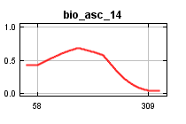
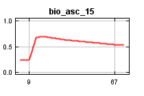
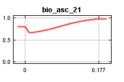
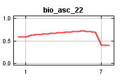
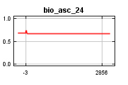
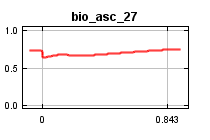
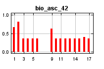
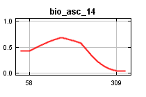
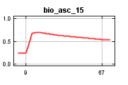
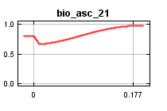
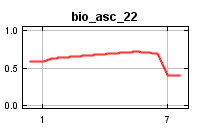
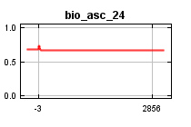
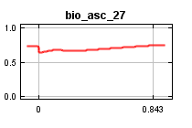
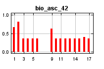
 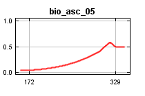
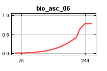
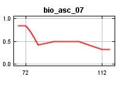
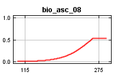
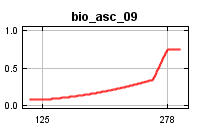
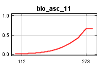
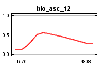
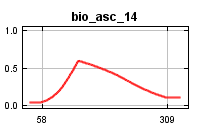
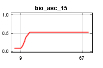
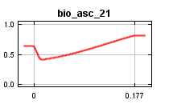
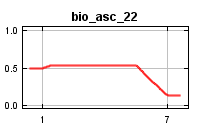
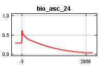
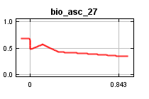
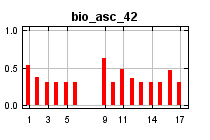
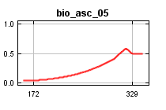
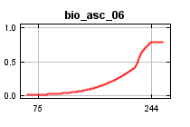
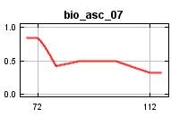
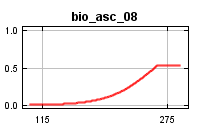
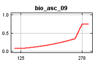
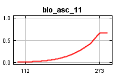
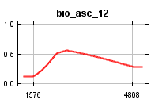
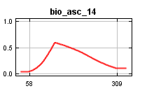
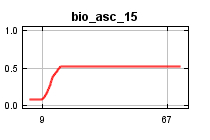
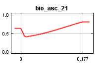
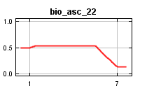
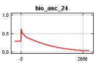
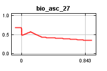
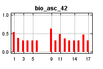